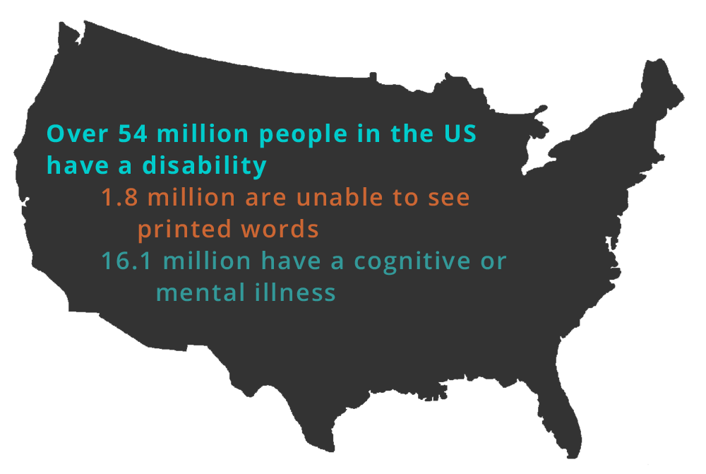
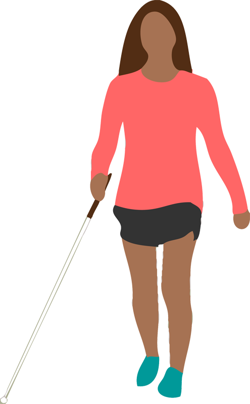
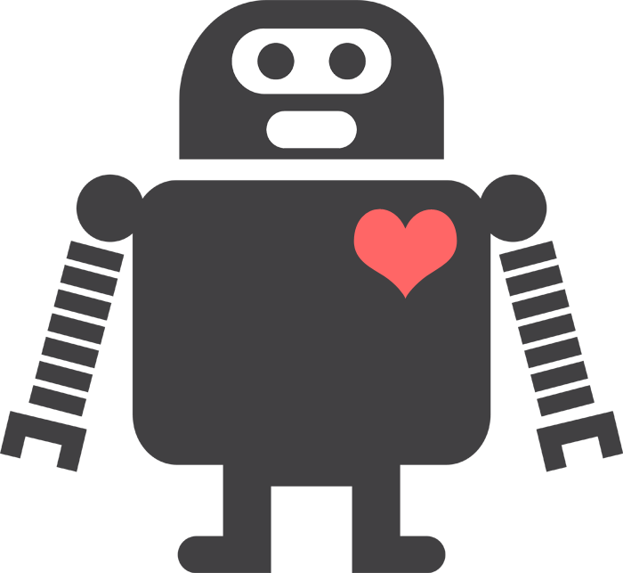
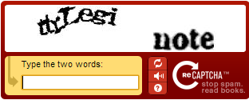

About me
- Front-end Developer
- GDI Philly Events Organizer
- LadyHacks & Ela Conf Organizer
- Web Accessibility Advocate
What we're going to cover today
- Why is this important?
- We'll look at some examples
- Quick overview
- Introduce some tools & techniques
- WordPress specific accessibility
- Questions?
Virgin America
“The result is a site that gets flyers booked nearly twice as fast, on any kind of device.”
“After looking at how flyers were using its website to search and book flights, the airline sought to completely reinvent the web experience.”
“I grudgingly admit, the new site not only looks far better, it works better too.”
Web accessibility is about:
- making your sites useful to as many people as possible.
- helping your users.
- awareness & accountability.
- leadership.
Why make our sites accessible?
More stats!
Of all US computer users..
- 17% (22 million) have a mild visual difficulty or impairment, 9% (11 million) are severe.
- 19% (24 million) have a mild dexterity difficulty or impairment, 5% (7 million) are severe.
- 18% (24 million) have a mild hearing difficulty or impairment, 2% (2.5 million) are severe.
(Source: Study Commissioned by Microsoft Corporation and Conducted by Forrester Research, Inc.
Something to think about...
There’s more users with disabilities than people using IE8.
Still, we tend to drop accessibility in favour of IE8 support.
#fronteers14
— Rik Schennink (@rikschennink) October 10, 2014Benefits of Accessibility
- Keyboard shortcuts
- Using captions and transcripts
- Good alt text
- Many times, good design practices create accessibility as a side effect
Types of Disability
- Visual disabilities: blind or low-sight, color blind
- Hearing disabilities: deaf or hard-of-hearing
- Physical disabilities: MS, ALS, paraplegic/quadriplegic, epilepsy
- Cognitive disabilities: dyslexia, low literacy, learning disabilities
- Seizures: prone to photoepileptic seizures
- An Alphabet of Accessibility Issues
Visual disabilities
Semantic HTML
- Gives the page meaning and structure.
- Don't use header tags out of order.
- Don't use HTML for presentation.
- That's what CSS is for!
Alt text
- Alternate text describes pictorial content in words.
- context.
- function not content.
- If an image is purely decorative, use "" to instruct a screen reader to skip it.
<img src="img/twitter-logo.png" alt="follow us on twitter">

Use color wisely
Provide contrast
The quick brown fox jumps over the lazy dog. The quick brown fox jumps over the lazy dog. The quick brown fox jumps over the lazy dog. The quick brown fox jumps over the lazy dog. The quick brown fox jumps over the lazy dog. The quick brown fox jumps over the lazy dog.
The quick brown fox jumps over the lazy dog. The quick brown fox jumps over the lazy dog. The quick brown fox jumps over the lazy dog. The quick brown fox jumps over the lazy dog. The quick brown fox jumps over the lazy dog. The quick brown fox jumps over the lazy dog.
Color & contrast best practices
- Don't rely on color to indicate something.
- Red/green color blindness is the most common.
- Minimum contrast ratio of 4.5:1 for normal text and 3:1 for large text.
- Try zooming in your designs.
Links!
- Link text should make sense.
- Make sure the user can tell where it's going to take them.
- Don't open links in a new window (unless you let the user know first).
- Use :focus wisely.
- Don't rely on color to signify a link.
- Further reading on link text
Removing :focus
Hint: Don't do it. Ever.
Hiding content
.hide {display: none;}.hide {visibility: hidden;}.hide {width:0px, height:0px;}.hide {text-indent: -10000px;}Recommended:
.hidden {
position:absolute;
left:-10000px;
top:auto;
width:1px;
height:1px;
overflow:hidden;
}Navigation
- "Skip to main content" links
- Hover navigation
- Make sure users can tab through each element
Dealing with Hearing Disabilities
- Provide captions or transcripts.
- Don't rely on sounds.
- Be especially careful if your site targets older users.
Dealing with Physical Disabilities
- Limited mobility users interact with the screen via keyboard.
- Other users use a mouse, but have trouble with fine motor control.
- Make clickable elements large.
- Avoid clickable page elements that move.
- Animations with rapid flickers.
Don't overwhelm

Provide plenty of time
CAPTCHAs don't just catch robots
Photo credit: Icon vector designed by Freepik
CAPTCHAs
- Aren't blind-friendly.
- Are very difficult for users with learning disabilities like dyslexia.
- Annoy everyone.
- Consider an alternative method.
- We the People example
WordPress alternatives to Captchas
Dealing with cognitive disabilities
- Not a lot of research in this area.
- Minimize cognitive load.
- Use common icons to mark important tasks.
Tools & extensions
Resources
- The Accessibility Project
- W3C Web Accessibility Initiative (WAI).
- WebAIM, an accessibility-focused organization with great information.
- Accessibilty Checklist
- Web Accessibility for Designers
- A11Y Wins